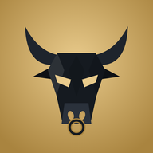

כמויות משוערות מספיקות. כתוב גם שמן, רטבים ושתייה. המאמן מעריך קלוריות וחלבון כטווח.
שקילה בודדת לא משנה את התוכנית. מסתכלים על מגמה של שבועיים–שלושה, על הכוח ועל ההתאוששות.
המאמן קורא את זה בכל שיחה ושואל רק על מה שחסר. אפשר גם לענות לו בצ׳אט והוא יעדכן כאן.
משמשת לחישוב המשקל הבא. אם לא תמלא, ההמלצה להעלאה תסומן "מותנה".
מחבר את אפליקציית האימון ואת המאמן, וגם כמה מכשירים. כל שינוי עובר לבד תוך שניות.